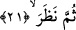
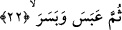
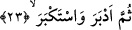

21. Sonra baktı.
Sonra o, Kur’ana bir kez daha baktı ve üzerinde düşündü.
22. Sonra kaşlarını çattı, suratını astı.
“Sonra suratını astı.” Yüzünün rengi değişti: Çünkü o Kur’an’da sataşacak hiç bir
nokta bulamamış ve ne diyeceğini bilemeyecek hâle gelmişti. “Kaşlarını çattı” ifâdesi
yukarda geçen “suratını astı” ifâdesine tâbidir.
Sa’dî Müftî der ki: Burada zâhir olan odur ki “abese” ve “besera” fiilden her birinin
birbirine aykırı bir anlamı olsa gerektir. Buna göre “abese” yüzünü ekşiltti, suratını astı,
“besera” ise kötülükten gözleri arası büzüldü. Yâni kaşlarını çattı, yüzü simsiyah
kesildi anlamınadır. Nitekim Halebî kelimeleri bu şekilde açıklar. Râğıb İsfahânî’nin
ifâdesine göre “besera”; herhangi bir şeyi daha zamanı gelmeden acele ile istemek
anlamınadır. Nitekim bu fiil Arapçada; “__WORD__ şeklinde kullanılır ki “filanca
kişi ihtiyacını zamanından önce talep etti” anlamında kullanılır. Buna göre âyette yer
alan “abese ve besera” fiilleri zamanından önce ve vakti gelmediği hâlde filanca kişi
yüzünü ekşitti demektir.
23. En sonunda, kibrini yenemeyip sırt çevirdi de:
Sonra o hakka arkasını döndü ve ona uymaktan kibirlendi.
24. «Bu (Kur’an) dedi, olsa olsa (sihirbazlardan öğrenilip) nakledilen bir sihirdir.
“Ve” haktan yüz çevirmesinin ardından dedi ki: Bu sâdece Muhammed’in söyledikleri
yâni Kur’an (öteden beri nakledile gelen) başkalarından rivâyet edilen ve öğrenilen
(bir sihirdir.) Yoksa Muhammed’in kendi başına yapmış olduğu sihir değildir. Arapça “__WORD__/esertü’l-hadîse” denilir ki ben hadis naklettim, rivâyet ettim demektir. “__WORD__/Aserahu eseran” ifâdesi ise herhangi bir kavmin vefatından sonra onlardan rivâyette